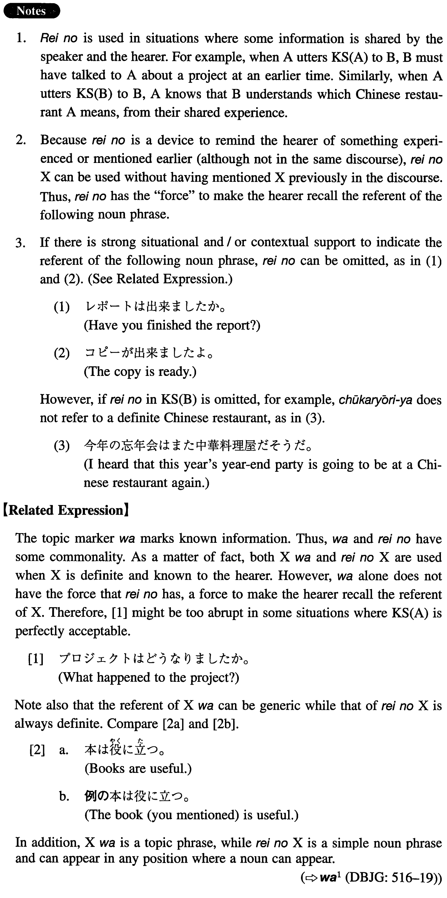

←
DoJG
→
例の
(I. 346)
Example sentences
(ksa).
例の
プロジェクトはどうなりましたか。
What happened to the project (in question)?
(ksb).
今年の忘年会はまた
例の
中華料理屋だそうだ。
I heard that this year's year-end party is going to be at that Chinese restaurant again.
(a).
例の
レポートは出来ましたか。
Have you finished the report (I requested, you mentioned, etc.)?
(b).
例の
コピーが出来ましたよ。
The copy (you asked for) is ready.
(c).
例の
ダイアナ妃の本、さっそく買って読んだよ。
I bought the book about Princess Diana (everybody is talking about, you recommended, etc.) right away and read it.
(d).
A：一時に学生が来るんですよ。B: ああ、
例の
ドイツから来た学生ですね。
A: student is coming at one. B: Oh, that student from Germany (you mentioned), right?
(e).
今晩、会える？B:ええ、いいわよ。A: じゃ、六時に
例の
喫茶店で。
A: Can we meet this evening? B: sure. A: Then, (let's meet) at the usual coffee house at six.
(f).
吉田さんがまた
例の
冗談を言ったが誰も笑わなかった。
Mr. Yoshida told us that (same) joke again, but no one laughed.
Formation
例の
Noun
例の
問題
The problem (in question)
